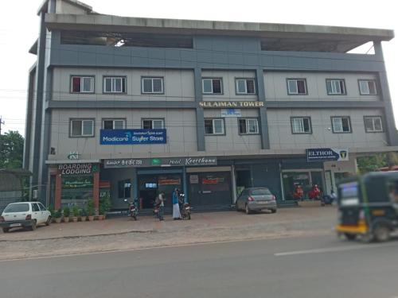

HOTEL KEERTHANA INN
Featuring 3-star accommodations, Hotel Keerthana Puttur is located in Puttūr, 29 miles from Mangalore Central Station and 28 miles from Kadri Manjunath Temple. This 3-star hotel offers room service and a 24-hour front desk. Mangala Devi Temple is 29 miles from the hotel and Gokarnanatheshwara Temple is 30 miles away. At the hotel each room is equipped with air conditioning and a flat-screen TV. The nearest airport is Mangalore International Airport, 29 miles from Hotel Keerthana Puttur. Hotel Keerthana Puttur has been welcoming Booking.com guests since Jun 23, 2022
